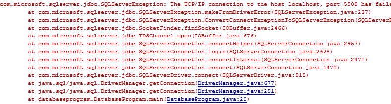
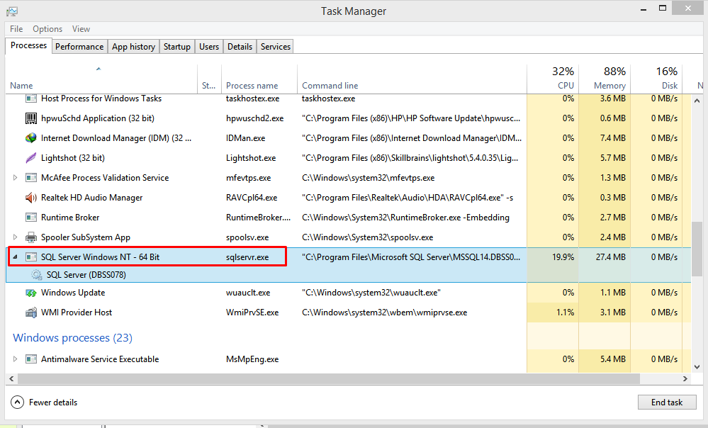
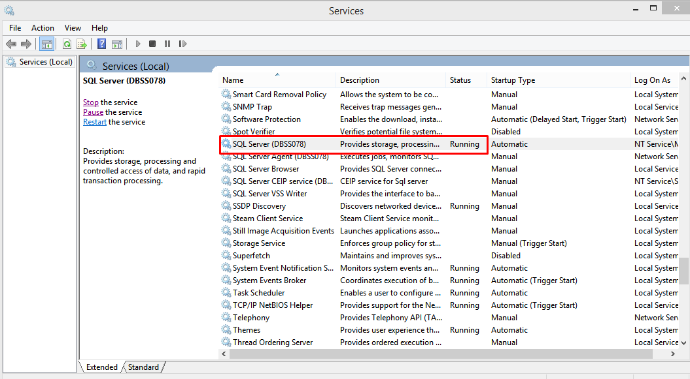
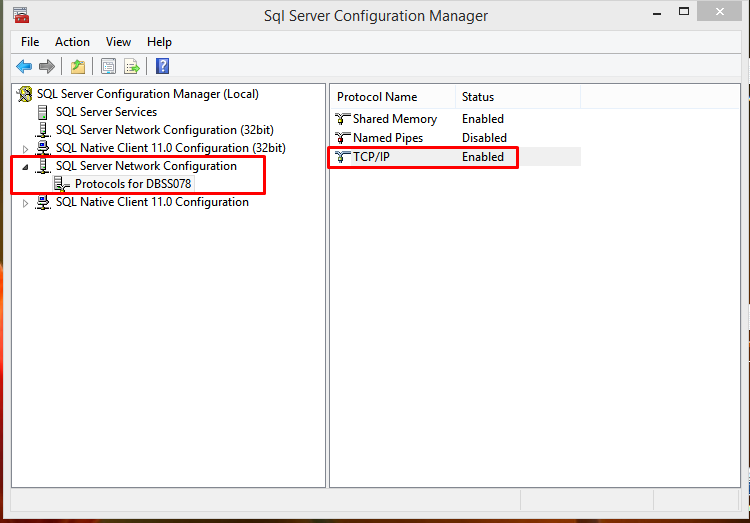
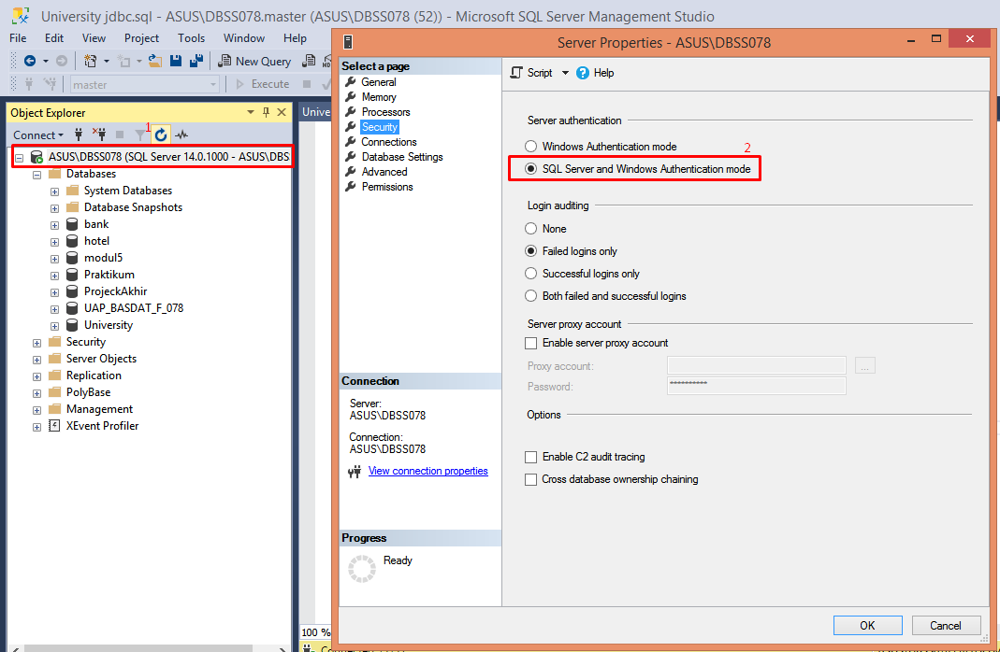
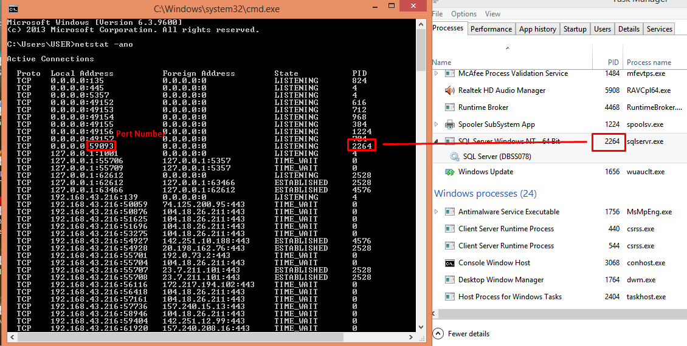

Tips Error Java: jdbc - TCP/IP connection has failedr
Salah satu error yang mungkin ditemui saat mencoba menggunakan jdbc untuk menghubungkan antara sebuah aplikasi java dengan sebuah database adalah "The TCP/IP connection has failed".
Error ini dapat disebabkan karena beberapa hal, diantaranya yaitu:
- Services SQL server belum menyala.
- Konfigurasi TCP/IP SQL server pada kondisi disabled.
- Mode authentikasi SQL server belum dinyalakan.
- Port number yang digunakan tidak tepat.
Services belum menyala
Untuk memeriksa apakah masalah yang ditemui adalah ini,
pertama-tama bukalah Task Manager. Lalu carilah proses SQL Server, apabila tidak ada maka service SQL server belum dinyalakan.

Maka dari itu untuk menyalakan bukalah daftar services windows baik dari task manager atau dari menu run (tekan tombol Windows+R) lalu ketik 'services.msc'. Saat sudah membuka services yang ada pada windows scroll ke bawah hingga sampai pada SQL Server services seperti yang ditunjukkan gambar di bawah ini. Lalu tekan "Start the services" apabila ia tidak dalam kondisi "Running".

Konfigurasi TCP/IP SQL server pada kondisi disabled
Untuk memeriksa apakah masalah yang ditemui adalah ini,
pertama-tama carilah "SQL Server Configuration Manager" pada komputer anda. Lalu buka dan periksa bagian yang ada pada gambar di bawah ini

Apabila TCP/IP dalam kondisi disabled maka klik 2 kali dan ubah agar ia menjadi enabled.
Mode authentikasi SQL server belum dinyalakan
Untuk mengatasi masalah ini maka bukalah SQL Server Management Studio (ssms) lalu klik kanan pada server anda (kotak sebelah kiri pada gambar di bawah) lalu pilih properties

Di dalam window properties klik pada bagian security lalu pastikan mode authentikasi yang digunakan oleh sql server adalah "SQL Server and Windows authentication" seperti yang ditandai pada bagian kanan gambar.
Port number yang digunakan tidak tepat.
Untuk mengatasi masalah ini pertama-tama periksalah PID dari process SQL server dengan task manager. Lalu buka command prompt dan ketiklah "netstat -ano". Pada output command prompt carilah PID proses sql server

Nomor port yang seharusnya anda gunakan adalah seperti angka yang diberi kotak pada gambar di atas. Jika sudah didapatkan maka gantilah nomor port pada kode java anda dengan nomor port ini.